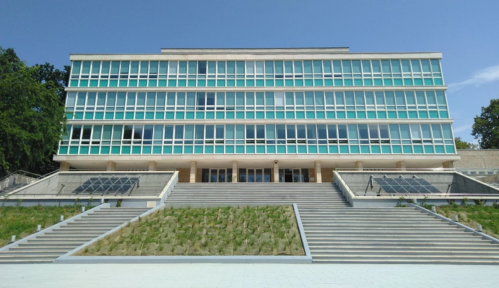

奨学生が多い大学 TOP 5（2025/26年度）
人数は、全参加国の奨学生を対象に、学部生・大学院生などを合計した在籍者数です。その年の新規合格者数ではありません。
| 順位 | 大学名 | 在籍奨学生数 |
|---|---|---|
| 1 | デブレツェン大学 | 1,924人 |
| 2 | ELTE | 1,716人 |
| 3 | ペーチ大学 | 1,160人 |
| 4 | BME | 985人 |
| 5 | MATE | 792人 |
1位はデブレツェン大学

ELTE・ペーチ大学・BME


2位のELTEと4位のBMEはブダペスト、3位のペーチ大学は地方都市ペーチにあります。
5位はハンガリー農業生命科学大学（MATE）


このデータから分かること
奨学金で学べる大学は、首都だけではありません。デブレツェンやペーチなど、地方都市の大学にも多くの奨学生がいます。
人数が多い大学ほど合格しやすい、とは限りません。学びたい分野・出願に必要な条件・学費や生活費も比べて選びましょう。